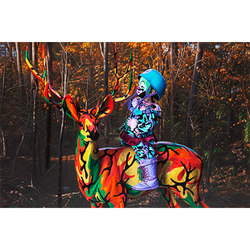
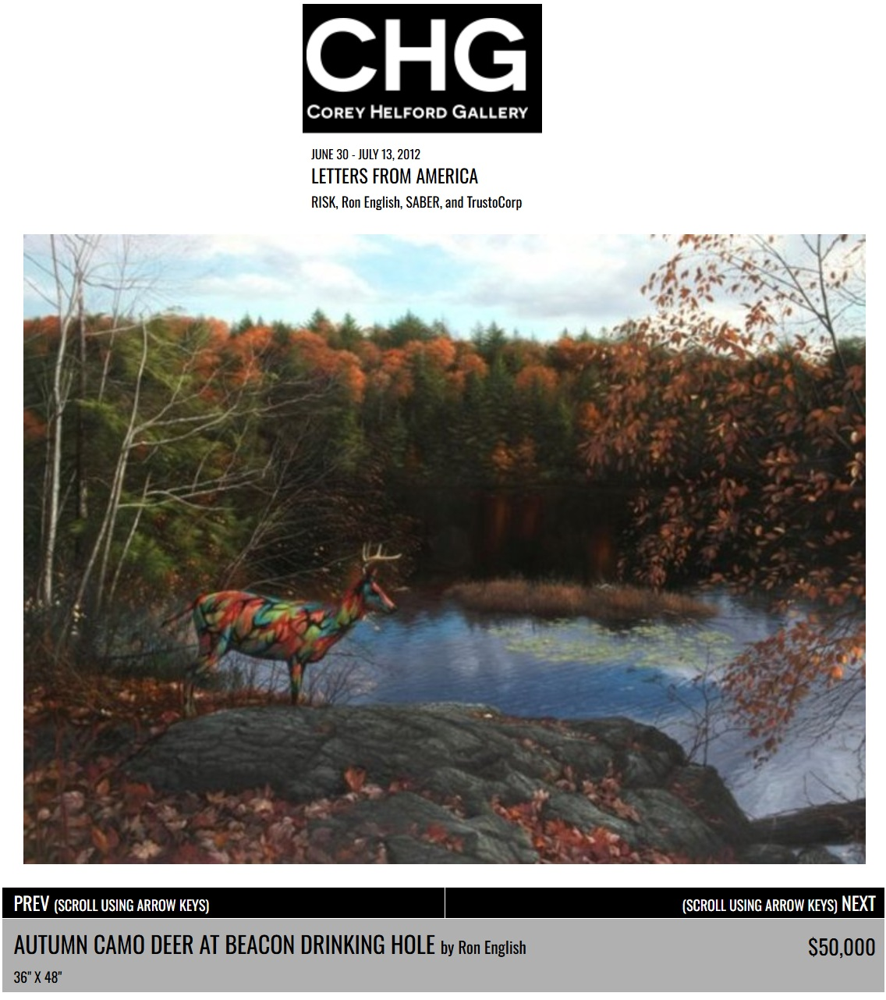

Exhibitions
Letters from America, London Pleasure Gardens, London, UK, June 30–July 13, 2012. Presented by Corey Helford Gallery.
Letters from America, Black Rat Gallery (Black Rat Projects), London, UK, July 4–18, 2012. Presented by Corey Helford Gallery.
Evolutionary Alternatives, Tribeca Grand Hotel, New York, New York, US, November 19, 2014.
Ron English: The Secret History of Beacon Bigfoot, KuBe Art Center (Ethan Cohen Gallery), Beacon, New York, US, August 6–December 1, 2022.
Notes
Also known as Autumn Camo Deer at Beacon Drinking Hole.
This work appears on Corey Helford Gallery’s artwork page for the exhibition Letters from America, available here, accessed April 11, 2026.
It also appears in Art & Fashion Salon’s exhibition photographs of Evolutionary Alternatives at the Tribeca Grand Hotel, available here, accessed April 12, 2026.
It also appears on Ethan Cohen Gallery’s exhibition page and installation views for The Secret History of Beacon Bigfoot, available here, accessed April 12, 2026.
Ancillary Documentation
